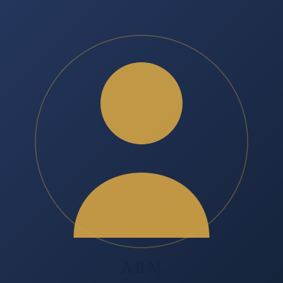

S1 Informatika
Universitas Muhammadiyah Malang
- IPK: 3,68 / 4,00 (semester 5)
- Penerima Beasiswa Bakti BCA
- Aktif mengikuti lomba kreativitas tingkat kampus (Rector Cup)
Curriculum Vitae
Mahasiswa Informatika - Desain Grafis & Web Development
Fokus utama saya ada di desain grafis - Figma dan Canva untuk poster, banner, dan aset visual. Coding menjadi pendukung: HTML, CSS, JavaScript, TypeScript, serta React Native. Aktif berprestasi di bidang akademik maupun non-akademik, dan terbiasa bekerja dalam tim dengan standar ketelitian tinggi.

Saya mahasiswa Informatika semester 5 dengan IPK 3,68. Kekuatan saya berada di bidang desain grafis - saya mahir menggunakan Figma dan Canva untuk mengerjakan poster, banner, editing foto, sampai identitas visual. Kemampuan programming saya menjadi pelengkap: HTML, CSS, JavaScript, TypeScript, React Native, serta dasar C dan Java.
Di sisi akademik, saya salah satu penerima Beasiswa Bakti BCA dan aktif mengikuti lomba kreativitas tingkat kampus. Di sisi non-akademik, saya meraih Juara 1 pada Rector Cup Basket 2025 dan Rector Cup PKM 2025, serta Juara 3 Rector Cup Basket 2026. Kombinasi desain, teknologi, dan prestasi ini membentuk cara kerja saya: teliti, konsisten, dan mampu mengubah ide menjadi karya nyata.
Rekam jejak akademik saya dari jenjang sekolah hingga perkuliahan.
Universitas Muhammadiyah Malang
MAN 2 Hulu Sungai Utara
Pengalaman profesional di lingkungan kerja maupun proyek lepas.
ShopeeFood
Proyek pribadi / akademik
Keterlibatan dalam kegiatan kampus dan kompetisi yang membentuk kemampuan kerja sama, disiplin, dan ketangguhan mental.
Lomba Internal - Universitas Muhammadiyah Malang
Pekan Olahraga Mahasiswa Provinsi - Cabang Basket
Kompetensi teknis dan kemampuan pendukung yang saya kembangkan secara konsisten.
Pencapaian di bidang akademik maupun non-akademik yang saya raih selama masa kuliah.
Universitas Muhammadiyah Malang · 2025 · Lomba kreativitas tingkat kampus
Program Beasiswa Prestasi
Universitas Muhammadiyah Malang · 2025 · Lomba olahraga tingkat kampus
Universitas Muhammadiyah Malang · 2026 · Lomba olahraga tingkat kampus
Pekan Olahraga Mahasiswa Provinsi · 2025 · Meng mewakili universitas di tingkat provinsi
Karya desain yang saya kerjakan. Klik gambar untuk pratinjau ukuran penuh.
Portofolio yang lain menyusul.
Dokumentasi pendukung setiap prestasi akademik dan non-akademik. Klik gambar untuk pratinjau ukuran penuh.
Saya terbuka untuk peluang magang, pekerjaan, maupun kolaborasi. Silakan hubungi saya melalui kanal berikut.
Email Pribadi
barrymahardikaa@gmail.com
Email Kampus
akbarimahardika@webmail.umm.ac.id
Telepon / WA
+62 812-5330-7906
linkedin.com/in/barrymahardika
GitHub
github.com/BarryMahardikaaa
Saya siap berkontribusi di bidang pemrograman maupun desain visual, dan terus berkembang di lingkungan kerja profesional. Silakan hubungi saya untuk diskusi lebih lanjut.